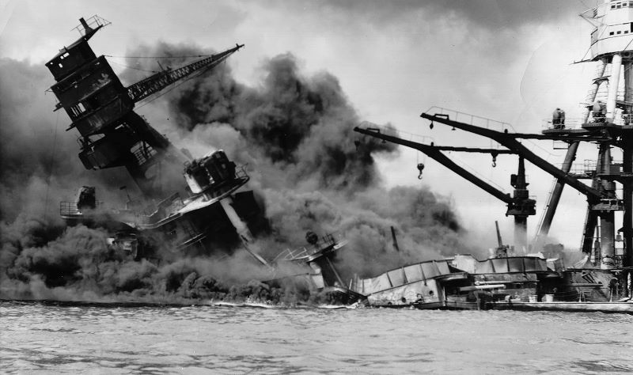
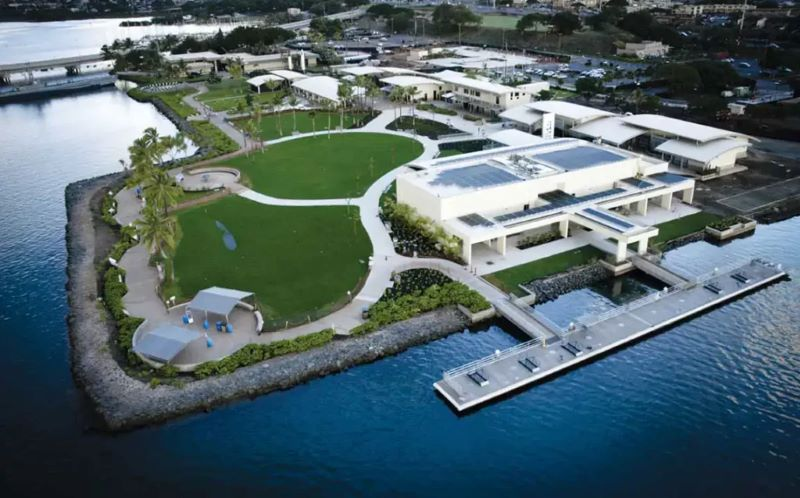
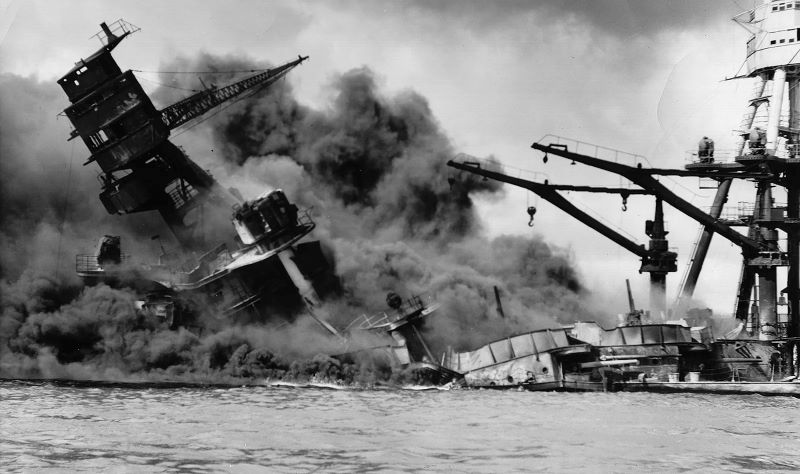
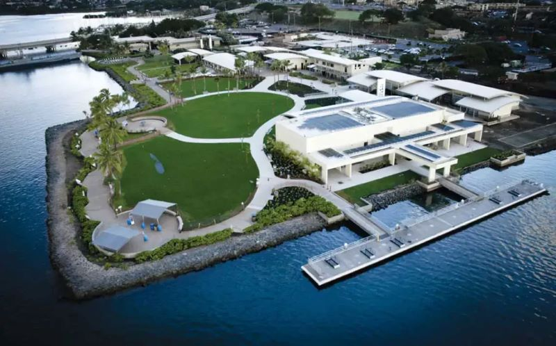

Pearl Harbor
In this page is in honor of the more than 2,300 servicemen and women and civilians who were affected by the tragic event that, response to which, led the country to fight in the Second World War..
 In this page is in honor of the more than 2,300 servicemen and women and civilians who were affected by the tragic event that, response to which, led the country to fight in the Second World War..
 